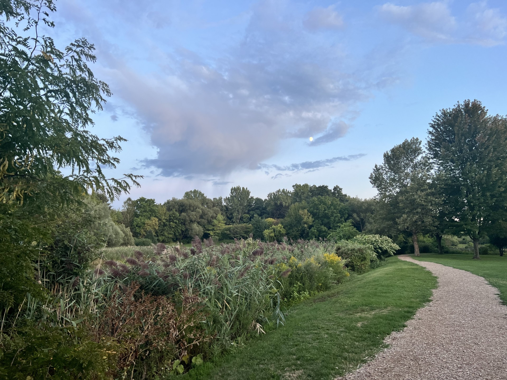
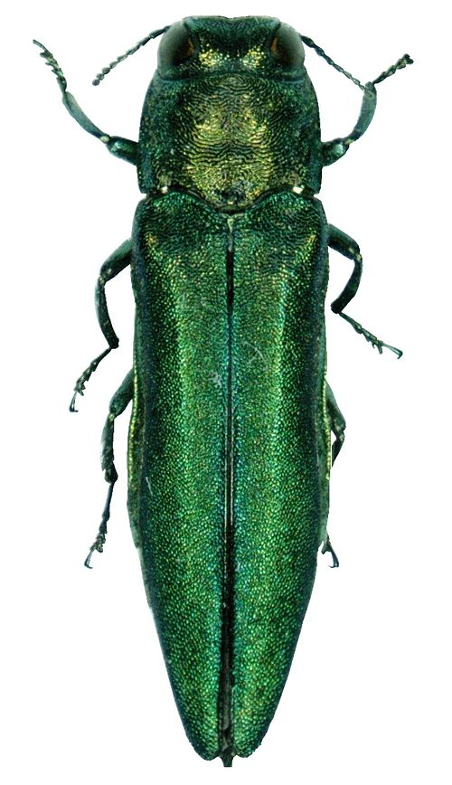

Explore
Explore Green Lakes State Park’s glacier-carved lakes and forest trails, Barry Park’s urban wildlife and community spaces, and Onondaga Lake’s restored habitats and cultural legacy. Learn where to hike, what species to watch for, and how conservation efforts are protecting Syracuse’s ecosystems for future generations.
Learn
Learn how invasive species like the Emerald Ash Borer, Hydrilla, and Spotted Lanternfly threaten Syracuse’s ecosystems and biodiversity. Explore how to identify common invaders, prevent their spread through responsible outdoor practices, and report sightings to protect local habitats. Simple actions—like cleaning gear, choosing native plants, and following firewood laws—can make a lasting impact.
Protect

Protect New York’s environment through climate policy, wildlife conservation, and sustainable community initiatives. Learn how habitat restoration, species protection, and long-term resilience efforts are shaping the future of green spaces across the state. Dive into the strategies that connect science, advocacy, and everyday action.